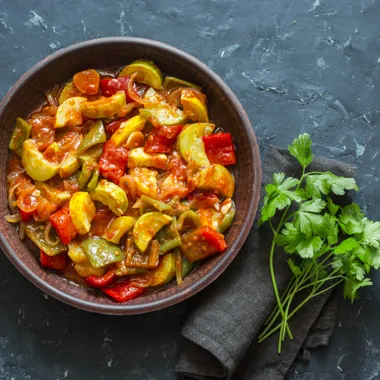

Ratatouille

Pour réaliser cette recette, vous aurez besoin des ustensiles suivants :
- Une poêle
- Un couteau
- Une planche à découper
- Une spatule
Les ingrédients nécessaires pour cette recette sont :
- 1 aubergine
- 1 courgette
- 1 poivron rouge
- 1 poivron vert
- 1 oignon
- 2 gousses d'ail
- 400g de tomates concassées en boîte
- 2 cuillères à soupe d'huile d'olive
- 1 brin de thym
- 1 feuille de laurier
- sel et poivre
Voici les étapes à suivre :
- Laver tous les légumes.
- Couper l'aubergine, la courgette et les poivrons en dés.
- Émincer l'oignon et l'ail.
- Dans une poêle, faire chauffer l'huile d'olive.
- Ajouter les légumes et les faire revenir pendant 5 minutes en remuant régulièrement.
- Ajouter les tomates concassées, le thym, le laurier, le sel et le poivre.
- Laisser mijoter à feu doux pendant 30 minutes en remuant de temps en temps.
- Servir chaud ou froid, selon votre préférence.